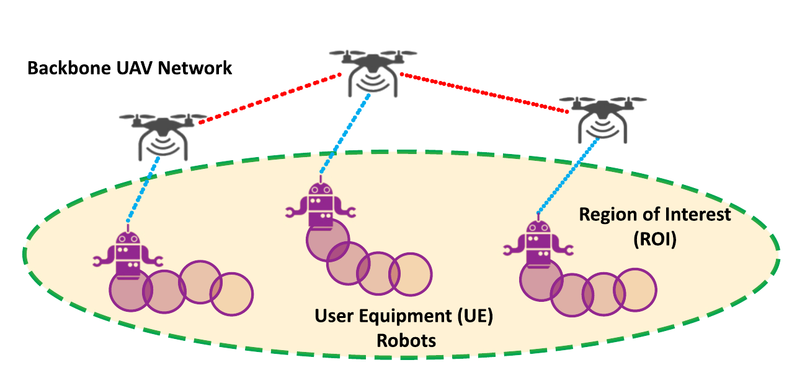
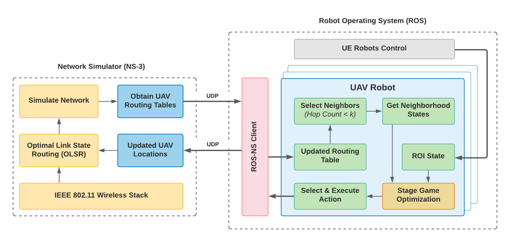

CoCo Games: Graphical Game-Theoretic Swarm Control for Communication-Aware Coverage
CoCo Games is a multi-robot coverage scheme focused on providing communication-aware coverage for a large Region of Interest (ROI). Specifically, CoCo Games can be used to coordinate UAV swarms to establish ad-hoc mobile wireless networks for stationary and moving ground robot teams in real-time. We also provide the ROS-NS, a real-time unified network and physics engine for simulating netork and robot dynamics in real-time.
Publications
Paper
Video
Software
Architectural Overview
Our system mainly depends on two simulation enviroments, Robot Operating System (ROS) and Network Simulator (NS-3). Briefly, NS-3 is a widely employed event simulator to design and implement network models. In this work, we delegate the task of network packet routing to NS-3 by accounting for wireless signal attenuation in the system. Further, to calculate the routing paths as the ad-hoc network changes, we used NS-3's inbuilt Optimized Link State Routing (OLSR) algorithm.
- The ROS environment simulates the UAV and UE robots’ movements while the NS-3 environment simulates the network events.
- The two environments communicate using, 'ROS-NS', a UDP interface running inside ROS.
- For moving ROI simulations, we use a team of UE robots, controlled using Reciprocal Velocity Obstacles (RVO).
- Each UAV robot has an instance of the stage game optimization algorithm. As the UAV robots move, NS-3 simulates the network instantly and calculates the new routing tables.
- At each stage of the game, we use the updated routing tables to identify the new neighborhood.
Open Source Code-Base
Drone Simulator
ROS-NS3 Bridge
Maintained by Malintha Fernando, ccfernan (at) iu.edu